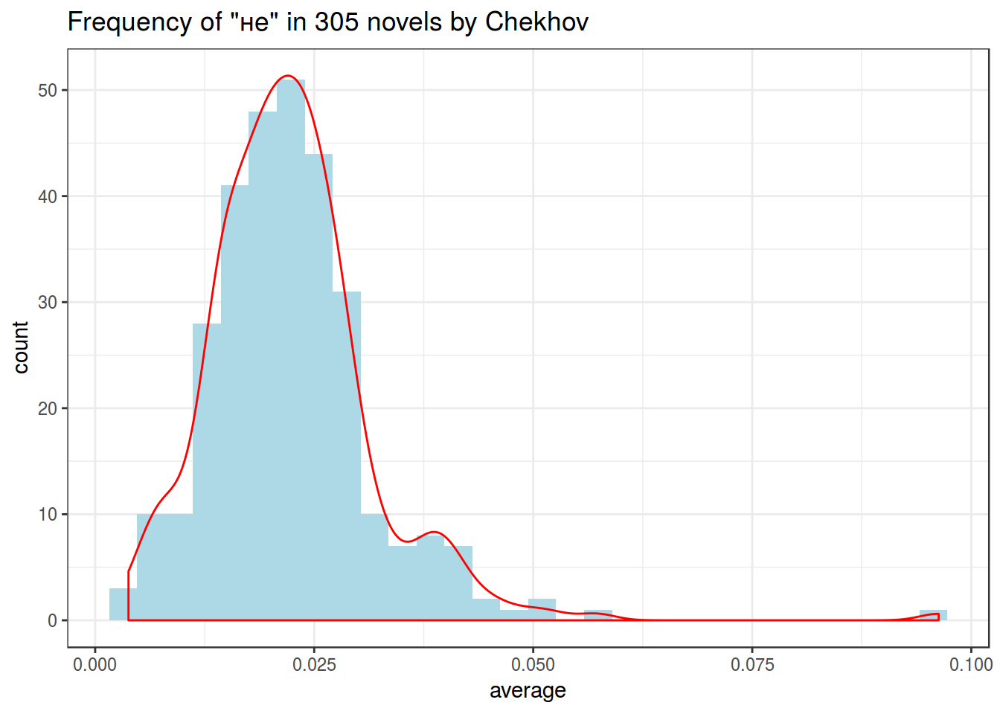
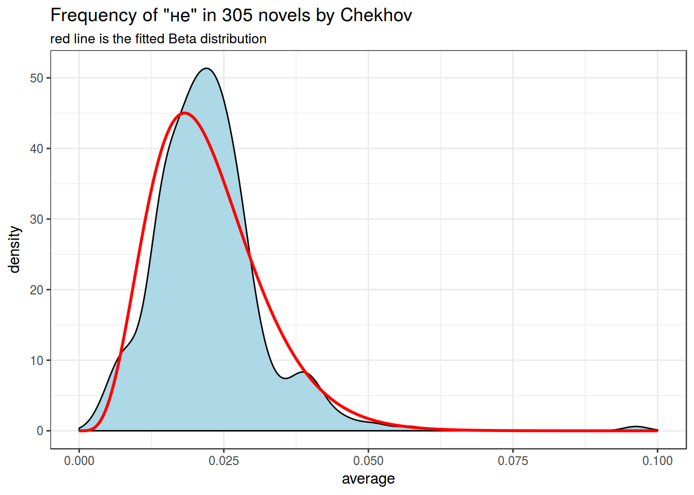
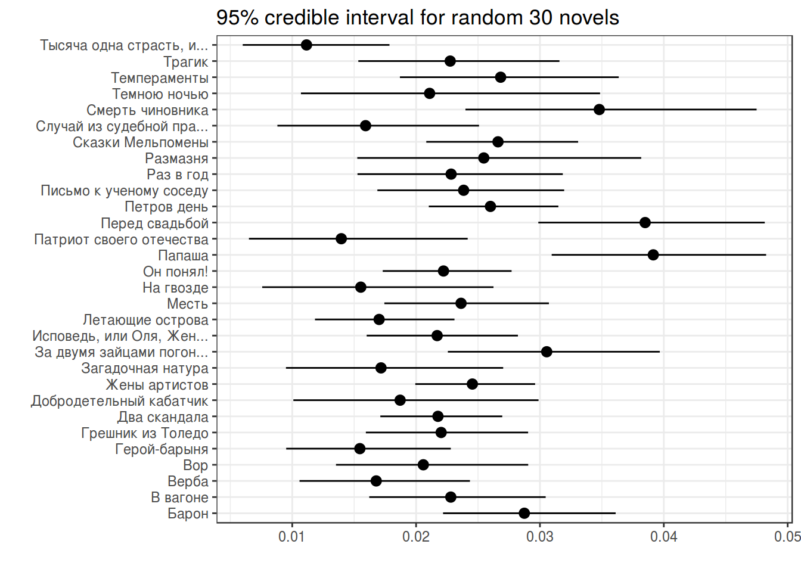

Lab_15
G. Moroz
library(tidyverse)
chekhov <- read_tsv("https://goo.gl/o18uj7")
chekhov %>%
mutate(trunc_titles = str_trunc(titles, 25, side = "right"),
average = n/n_words) ->
chekhov
head(chekhov)chekhov %>%
filter(word == "не") %>%
select(trunc_titles, word, average) %>%
ggplot(aes(average)) +
geom_histogram(fill = "lightblue")+
geom_density(color = "red")+
theme_bw()+
labs(title = 'Frequency of "не" in 305 novels by Chekhov')
mu <- mean(chekhov$average[chekhov$word == "не"])
var <- var(chekhov$average[chekhov$word == "не"])
alpha0 <- ((1 - mu) / var - 1 / mu) * mu ^ 2
beta0 <- alpha0 * (1 / mu - 1)
x <- seq(0, 0.1, length = 1000)
estimation <- data_frame(
x = x,
density = c(dbeta(x, shape1 = alpha0, shape2 = beta0)))
chekhov %>%
filter(word == "не") %>%
select(trunc_titles, word, average) %>%
ggplot(aes(average)) +
geom_density(fill = "lightblue")+
geom_line(data = estimation, aes(x, density), color = "red", size = 1)+
theme_bw()+
labs(title = 'Frequency of "не" in 305 novels by Chekhov',
subtitle = "red line is the fitted Beta distribution")
chekhov %>%
filter(word == "не") %>%
slice(1:30) %>%
group_by(titles) %>%
mutate(alpha_post = n+alpha0,
beta_post = n_words-n+beta0,
average_post = alpha_post/(alpha_post+beta_post),
cred_int_l = qbeta(.025, alpha_post, beta_post),
cred_int_h = qbeta(.975, alpha_post, beta_post)) ->
posterior
posterior %>%
select(titles, n_words, average, average_post) %>%
arrange(n_words)posterior %>%
ggplot(aes(trunc_titles, average_post, ymin = cred_int_l, ymax = cred_int_h))+
geom_pointrange()+
coord_flip()+
theme_bw()+
labs(x = "", y = "", title = "95% credible interval for random 30 novels")